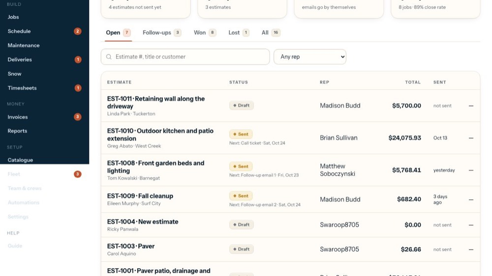
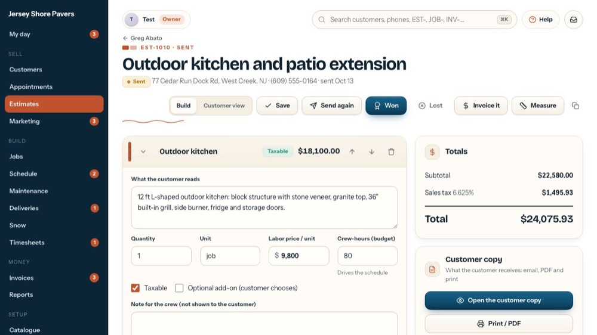
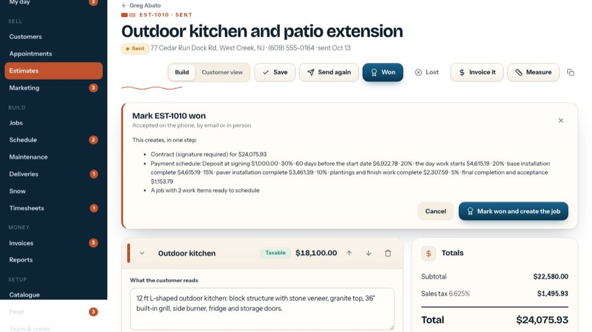
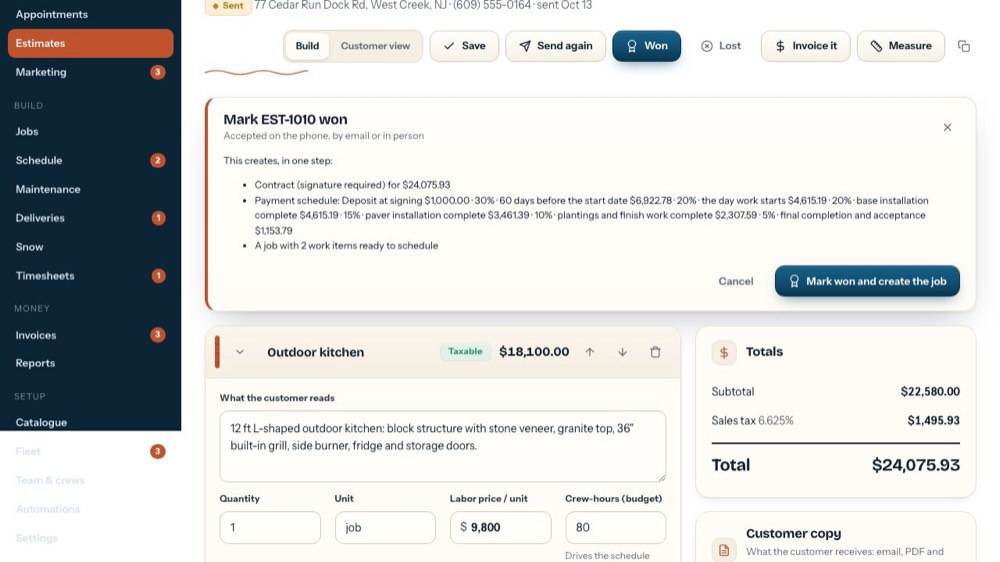

The customer said yes: contract, payment schedule and job
In the office app, press Help and type the customer said yes
: the tour plays on your own screen, with your own data.
-

1Open the estimate
The one the customer accepted.
-

2Won
Press Won when they accept: on the phone, by email or in person.
-

3One step makes it all
The contract, the payment schedule and the job, with a work item per section. Tick the add-ons they took.
-

4Create the job
Press it when it's real: the job then waits on the Schedule. The tour doesn't press it.